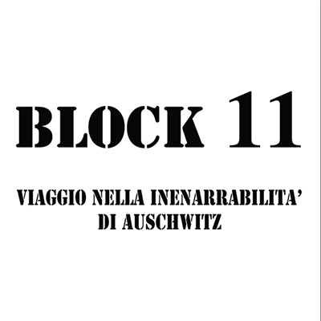
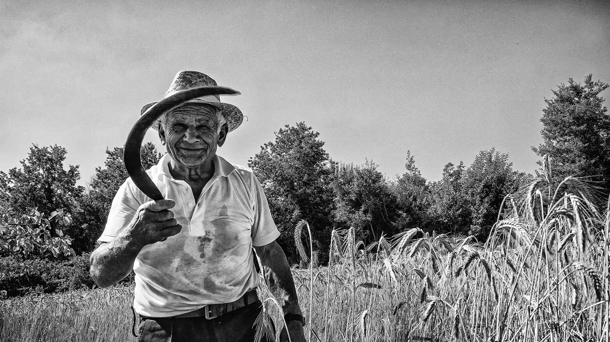
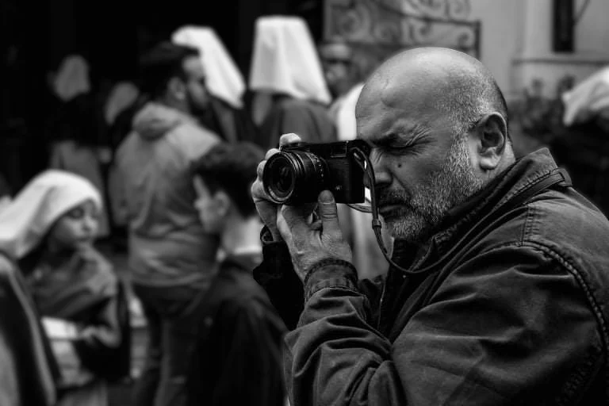

La passione per la fotografia ha accompagnato la mia vita da sempre, nata dalla curiosità che ha sempre contraddistinto il mio sguardo sul mondo.
Dal Mare al Jazz
Dal 1985 al 1992 ho vissuto e lavorato a La Spezia, dove ho immortalato i borghi delle Cinque
Terre e le persone che li abitavano. Negli anni seguenti ho realizzato diversi progetti sulla
vita di mare, fino al 1999: l'anno in cui la fotografia jazz è entrata prepotentemente nella mia
vita.
Quindici Anni di Jazz
L'incontro con il jazz è stato un crescendo continuo di emozioni visive, una sinestesia perfetta
tra musica e immagine. Dal 2000 al 2014 sono stato fotografo ufficiale del Teano Jazz Festival,
dove ho ritratto il mio primo musicista: Bill Frisell.
In quegli anni ho catturato l'essenza di grandi artisti come Dave Holland, Paolo Fresu, Enrico Rava, Ron Carter, Chris Potter, Carla Bley, Stefano Bollani, Fabrizio Bosso, fino ai Buena Vista Social Club e Marcus Miller.
Il Dovere della Memoria
Nel 2007 e 2008 ho realizzato un reportage fotografico ad Auschwitz. Da febbraio 2008 porto
questo lavoro nelle scuole di ogni ordine e grado, trasformando il dolore di quei luoghi in
testimonianza visiva per le nuove generazioni.
La Mia Fotografia Oggi
Il bianco e nero rimane la mia più grande passione. Cerco la mia fotografia tra la gente dei
piccoli borghi, tra i viaggiatori dei treni, nelle processioni che sanno di antico e sacro, nei
mercati dove il diverso si annulla nelle voci e nei sorrisi.
Ho costruito il mio stile attraverso la lezione dei Grandi Maestri, arrivando a una visione personale del mondo basata sul contrasto tra luci e ombre, rielaborando la street photography in un linguaggio narrativo moderno.
"La mia fotografia è questo: saper prima ascoltare, poi vedere il mondo che mi circonda."
Tel